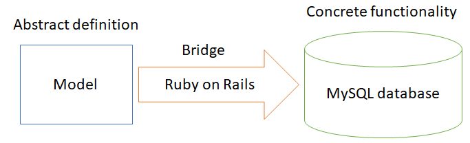

Design Patterns
During the development stage we used a number of Design Patterns in order to help speed up the development process by providing tested and proven development paradigms. The design patterns that we used were:
Model, View, Controller
The Rails frameworks is based on the Model View Controller abstraction where the Controller updates the view according to the model. It clearly is adapted to the Web needs and built around the HTTP specifications (so a controller returns a Response rather than necessarily updating the View) but the underlying logic can be easily recognised. It is very useful as responsibilities are assigned according to each component.
Bridge Pattern
We utilise the Bridge pattern in order to help with the development of our models. We define an abstraction in source files, and then the Rails framework takes this information and then manipulates the MySQL database to match. These higher level constructs serve as an easy access point to manipulating the lower level components of the system.

The diagram above shows how we used this design pattern within our application. The model refers to one of our four different models - Systems, Versions, DataPoints and Mappings.
Template Method pattern
Our usage of the basic functionality of Rails qualifies as the Template Method pattern, which involves building on an existing skeleton deferring behaviour to subclasses. The framework provides the core of functionality for many of our classes, which we apply operations on in order to extend their abilities. We provide behaviour for functions which had minimal operations previously.
Singleton
The Singleton pattern discusses a concept of requiring only one instance of an object in order to help coordinate actions across the system. In this way, both the MySQL database - established only once and accessed across the breadth of the software, serving as an oracle of truth against which information is checked, compared, and written to - and the controller act as Singletons.